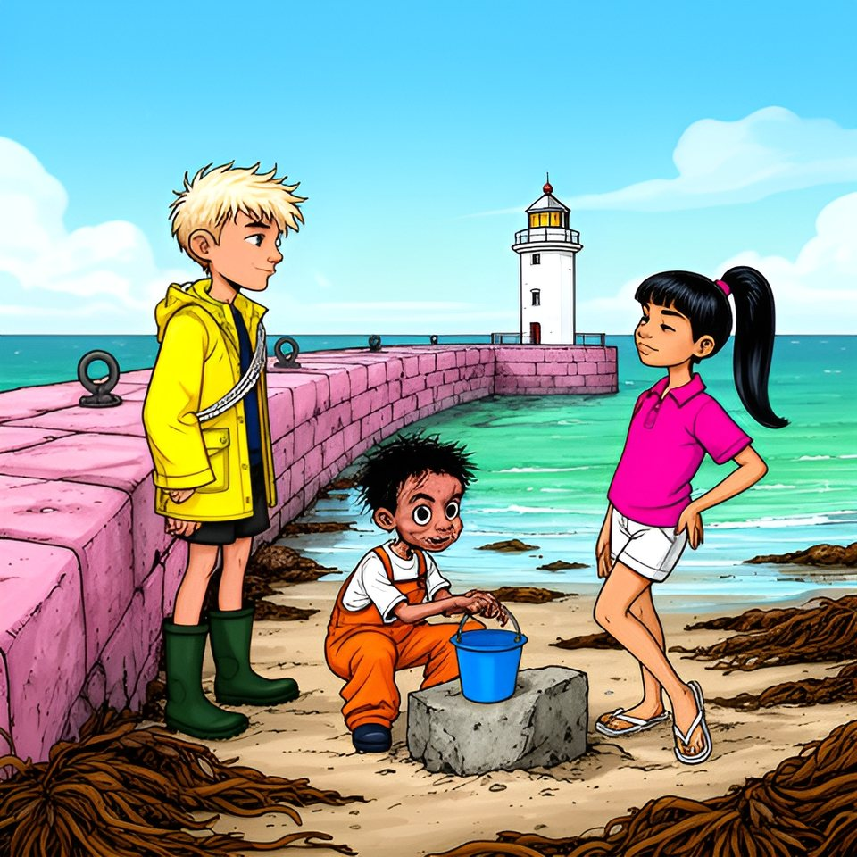

Titistoire › Les Galaxies (8-10 ans)
La dernière pierre
Le Trésor coupé en deux, épisode 8 sur 8 : un feuilleton à énigmes sur l'île de Lodenn.

▶ Écouter et regarder l'histoire
Gratuit, sans inscription : la voix lit, le texte suit mot à mot, les images tournent comme dans un album.
Le texte de l'histoire
Entre les Jumelles, Enora a retourné quatre lettres, et Maël et Victoire se sont retournés : le chemin du capitaine, c'est le Môle. Le soir de la veillée, Awa a croisé les deux traits de crayon : ils se rejoignent au bout du Môle. Gildas, lui, cherche toujours aux Jumelles.
Car la carte dit : « Mon trésor est aux jumelles. Il dort sous la dernière pierre du chemin qui marche sur la mer. Venez à deux le jour de la grande maline. » Et Tino a demandé, en bâillant : « Mais alors, pourquoi il a écrit aux jumelles ? »
Le matin du cent seize, Tino descendit à la cale avec son seau et une réponse. « Aux jumelles, ça veut dire qu'il faut des jumelles pour le voir. Comme celles du monsieur du Hérisson. » Maël ne tourna même pas la tête. « Avis de brouillard sur Tino. »
Victoire arriva au pas de course, la queue-de-cheval de travers. « Objection à tout ! Le capitaine n'appelle jamais ces rochers les jumelles. Sur la carte, dans ses leçons, il écrit : les sœurs de pierre. Toujours. Alors ses jumelles, à lui, ce n'est pas un endroit. »
Tino reposa son seau. « Azénor est née un soir de maline. Nolwenn est née une nuit de grande marée. C'est pas moi qui le dis, c'est vous deux. » Il regarda Maël, puis Victoire. « Le même soir. »
« Deux sœurs nées le même soir, acheva Victoire. Des jumelles. Mon trésor est aux jumelles : il n'a pas écrit où. Il a écrit à qui. À ses filles. À toutes les deux. » Maël la dévisagea. Ils avaient le même menton têtu, et c'était de famille. « Calme plat », annonça-t-il.
Restait Gildas, qui cherchait au mauvais endroit. Fallait-il le prévenir ? On vota sur le parapet de la crêperie : trois oui, trois non. On posa deux bouts de crêpe, un par camp. Le Douanier considéra le oui, considéra le non, et avala les deux.
« J'y vais seule », décida Enora. Sur le quai, Gildas chargeait des cordages dans le Hérisson. Elle prononça trois mots, sans rien autour : « C'est au Môle. » Il leva les yeux de sa tablette. Il la crut. Il la croyait toujours.
« Je ne peux pas, répondit-il. Cinquante personnes m'attendent à la Chaussée pour hisser l'ancre que le sonar a trouvée. On ne lâche pas cinquante personnes. » Il consulta son écran. « À quatorze heures vingt, il restera douze centimètres d'eau au pied du Môle. C'est mesuré. Allez-y à deux. »
À une heure et demie, six flotteurs passèrent au rang de la grève. Job ne demanda rien : il s'assit près de la cloche, la main sur la corde, et ne quitta plus le Môle des yeux.
De la dernière borne du Môle, Awa vérifia les deux lignes. Vers l'île, le clocher tombait juste au-dessus de la Croix. Vers le large, le Corps de garde se tenait bien droit entre les deux Jumelles. « En fait, c'est ici. Nulle part ailleurs. »
À treize heures cinquante, la mer lâcha le pied du Môle. « Elle ouvre à son heure, jamais à la tienne, récita Maël. Mer belle. On y va. » Ils descendirent la cale derrière elle. Tino leva le nez vers la muraille rose. « Le Môle a mille pierres. Laquelle ? »
« Mon chemin en fait trois cents, pas un de plus, lui rappela Victoire. Compte. » Tino compta, le long du mur, de son pas de tous les jours. À trois cents, il s'arrêta. Devant lui, dans douze centimètres d'eau claire, dormait une rangée de blocs noirs de goémon : la dernière assise. Personne ne l'avait jamais vue.
Oscar ramassa un galet. Il avait horreur du goémon ; il s'y agenouilla jusqu'au poncho. Il frappa un bloc : le granit chanta. Un autre : il chanta. Le troisième répondit tout bas. « Poc, traduisit Oscar. Celui-là fait poc. Il garde quelque chose. »
Sous les algues, la pierre portait deux anneaux de fer, un de chaque côté. Maël tira sur le sien : elle se coinça. Victoire tira sur l'autre : elle se coinça dans l'autre sens. « Venez à deux », murmura Enora.
Maël déroula sa corde et la passa dans les deux anneaux : pour une fois, il n'en manquait pas un bout. Awa défit le nœud de Maël et le refit. « En fait, le tien aurait lâché. » Six paires de mains empoignèrent la corde, trois de chaque côté. Oscar donna la note.
Et l'on sut enfin à quoi servait la vieille chanson. « Le capitaine avait de l'or, hisse et ho, la Rieuse ! » À chaque « hisse », la pierre venait d'un doigt. Au couplet de celle qui reste, elle trembla. Au couplet de celle qui part, elle glissa hors du mur comme un tiroir.
Derrière, il y avait un trou noir. Dans le trou, un crabe. Tino devint gris. Puis il ferma les yeux, compta jusqu'à trois, et plongea le bras jusqu'à l'épaule. Il en ressortit une boîte de plomb, plate, scellée de poix noire.
Sur la cale, la cloche sonna. Quatorze heures vingt : la mer retenait son souffle. On remonta par l'escalier du Môle, Tino en tête. Ce n'était pas le coffre que quatre hommes portaient. C'était un coffret qu'un enfant de neuf ans tenait dans ses bras.
En haut, on attendit Job, qui venait de sa cale à petits pas, la craie à la main. Le couvercle résista, puis céda. Dedans, il y avait deux longues-vues de laiton, toutes pareilles ; un gros cahier ficelé ; une lettre ; et une pièce d'or. Une seule.
Victoire déplia la lettre et lut, malgré les s qui ressemblaient à des f : « Mes filles. Si vous lisez ceci, c'est que vous êtes venues à deux, et je n'ai plus rien à souhaiter. Il n'y a pas de part à partager : tout mon or est sous vos pieds, et il s'appelle le Môle. »
« Azénor l'a porté. Nolwenn l'a fini. Aucune ne l'a dit à l'autre ; je vous le dis. Voici une lunette pour chacune : celle qui reste regardera le large, celle qui part regardera l'île. Et voici mon dernier louis. Je n'ai pas su le couper en deux. Arrangez-vous. »
« UN ? » s'étrangla Tino, qui en avait compté d'avance quatre mille. Puis, un par un, les six regardèrent leurs pieds. Dessous, il y avait trois cents pas de granit rose, venu d'ailleurs, porté pierre après pierre, payé sou après sou.
L'or du capitaine n'avait jamais été caché. Toute l'île marchait dessus depuis toujours ; chaque soir, vingt estivants venaient y téléphoner, debout sur le trésor. Tino colla son œil à une longue-vue. « Des jumelles. Je l'avais bien dit, qu'il en fallait. »
Oscar se tourna vers Job et posa sa question pour la troisième fois. « Et Lodenn, ça veut dire quoi ? » Job ne répondit pas « Hein ? ». Il regarda le Môle, puis les six, serrés sur le banc qu'ils se disputaient depuis trois étés. « Lodenn ? C'est du vieux breton. Ça veut dire : la part. »
Gildas revint avec la mer montante, la grande ancre de la Rieuse en remorque. Les six votèrent : six voix, aucune égalité, pour la première fois. Le Douanier en parut vexé. Puis Maël et Victoire tendirent à Gildas le cahier du capitaine.
Il le lut debout, longtemps : les comptes du chantier, le nom de chaque famille qui avait porté des pierres, et la façon dont le Môle était bâti, fondations et mortier. « Ce n'est pas de l'or, constata-t-il. — Non, répondit Enora. C'est le mode d'emploi. »
On saurait donc le réparer. Le louis ouvrit une souscription : une pierre, un nom, comme la première fois. Ceux de l'île donneraient leurs bras ; ceux d'en face, leurs sous. Il y en avait pour trois hivers. Gildas resta pour le premier.
Sans un mot, Job décrocha le vieux flotteur gris du rang du large et le pendit au rang d'à terre. Tino ne demanda pas à qui il était. Ce soir-là, Gildas ne dormit pas sur son bateau. Il dormit chez son père, dans la maison de Job, où son lit l'attendait depuis vingt-cinq ans.
Restait à baptiser la bande. « Les Bottongs, proposa Oscar. Tadam. » Trois voix pour, trois contre. On vota jusqu'à la soupe, sur tous les noms. Ils ne tombèrent jamais d'accord — ce qui prouve assez qu'ils formaient une vraie bande.
Trois jours plus tard, le Va-et-Vient largua les amarres avec les valises des hirondelles, et un sac qui n'était pas une valise. Sur le tableau de la cale, quatre flotteurs étaient passés au rang du large : le jaune, le rose, le bleu, le violet. « Du large, on revient », avait grogné Job.
Oscar, qui comptait les jours en arrivant, ne voulait plus monter à bord. Awa ignorait si elle reviendrait : sa maison d'été était à vendre. Victoire, du bout du Môle, avait chanté au téléphone le couplet qui manquait à sa berceuse. Bonne-Maman n'avait rien répondu. Puis elle avait demandé à quelle heure partait la navette.
Deux flotteurs restaient à terre : le vert et l'orange. Enora et Tino se tenaient au bout du Môle, debout sur le trésor, là où les téléphones captaient et où ils n'en avaient pas besoin. Sur le pont, Victoire tendit à Maël la longue-vue de celle qui part. Il la colla à son œil, et regarda l'île.
Sur le Môle, Enora leva celle de celle qui reste, et regarda le large. Ils se voyaient très bien. « Avis de… », commença Maël. Il n'y avait pas d'avis. Le Douanier suivit la navette jusqu'au milieu du chenal, préleva sa part sur le sandwich d'Oscar, et rentra.
Ce soir-là, la mer revint border Lodenn, comme tous les soirs. Sur l'ardoise de la cale, Job écrivit le chiffre du lendemain. Puis, dessous, pour la première fois de sa vie, il ajouta deux mots qui n'étaient pas des chiffres : à bientôt.
La vérité vraie ? C'est moi qui vous ai raconté tout cela. Et pour une fois, tout est vrai.